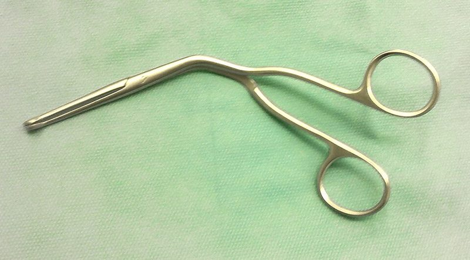

매길겸자 (Magill Forceps)

쉽게 풀면
휘어진 집게 모양 도구로, 목구멍 안에 걸린 이물질을 직접 보면서 꺼내거나 관 위치를 조정할 때 쓴다.
왜 중요한가
후두경으로 시야를 확보한 상태에서 기도 이물을 집어내거나 튜브를 유도하는 데 쓰는 굽은 겸자로, 기도 이물 폐쇄에서 기본 술기가 실패한 뒤 병원 전 단계에서 시행하는 직접 제거의 유일한 도구여서 사례 보고와 시뮬레이션 연구에서 다뤄진다. 업무 범위에 포함할지가 체계별로 다르다.
겸자는 이물질 제거뿐 아니라 코를 통한 기관삽관 시 튜브 끝이 성문을 향하도록 방향을 미세 조정하는 데도 쓰여, 단순 제거 도구를 넘어 삽관 보조기구로서의 역할도 함께 수행한다.
어디에 있고 어떻게 생겼나
- 매길겸자는 손잡이 쪽에서 끝으로 가며 꺾여 있는 집게형 기구이다. 두 개의 고리형 손잡이가 경첩처럼 맞물리고, 끝의 두 날(턱)이 서로 닿아 물체나 튜브를 집는다.
- 이름은 아일랜드 출신 마취과 의사 아이반 매길(Ivan Magill)에서 왔다. 그는 기관삽관 기법을 발전시킨 인물로, 이 겸자도 그의 이름을 따서 부른다(Magill, 1930).
- 몸통이 꺾여 있어 집게를 쥔 손이 입 앞에 놓여도 후두경을 통해 보는 시야를 가리지 않는다. 곧은 겸자였다면 손과 기구가 시선을 막았을 것이다.
- 크기는 성인용과 소아용으로 나뉘며 길이와 구경이 서로 다르다.
- 후두경(후두경)으로 성문을 직접 보는 상태에서 쓰는 기구이다. 후두경의 곡형 날(Macintosh, 1943) 같은 도구와 함께 쓰는 것이 일반적이다.
- 매길이 1920년대 초에 고안한 뒤 모양이 거의 바뀌지 않았다. 몸통 중간이 약 90도로 꺾였고 끝은 톱니와 구멍이 있어 물체를 단단히 잡는다. 스테인리스강으로 만들며 길이는 신생아용 약 16 cm, 소아용 약 20 cm, 성인용 약 24 cm가 표준이다.
맡은 기능
- 이물 제거: 후두경으로 입안과 인두, 후두 입구가 보이는 상태에서 기도에 걸린 이물을 집어낸다. 보이지 않는 이물을 손가락이나 겸자로 더듬어 빼려 하면 더 깊이 밀어 넣을 수 있으므로 시야가 확보된 경우로 한정한다. 기본 술기(등 두드리기, 복부 밀어내기 등)가 실패한 뒤에 쓰는 직접 제거 수단이다(이물질기도폐쇄).
- 튜브 유도: 코를 통한 기관삽관에서 튜브 끝이 성문을 향하도록 방향을 미세하게 조정한다(기관삽관). 이때 튜브 몸체를 집되 커프를 잡아 손상시키지 않도록 커프보다 손잡이 쪽(근위부) 몸체를 잡는 것이 일반적인 교육 내용이다.
- 사용 범위: 응급구조사의 업무 범위에 포함되는지는 국가와 체계마다 달라서, 논문에서 인용할 때는 해당 체계의 규정을 확인해야 한다.
- 교과서가 드는 주요 용도는 세 가지이다. 직접 후두경 아래에서 코기관 튜브를 성대 사이로 밀어 넣기, 상기도를 막는 이물 꺼내기, 두경부 수술 중 비위관이나 인두 패킹을 식도 쪽으로 넣기이다. 국제 소생술 지침은 후두경으로 이물이 보일 때 숙련된 의료인이 매길겸자를 쓰도록 권고한다.
코기관 삽관에서는 겸자를 오른손에 쥐고 곡선이 튜브의 경로를 따르게 한다. 튜브는 커프 위쪽을 잡거나 커프를 부분적으로 부풀린 뒤 잡아 커프가 찢어지거나 점막이 다치는 것을 막는다. 잡는 시도 횟수를 제한하고, 대상이 분명히 보이지 않으면 이 방법을 포기한다. 사용 후에는 고압증기멸균을 한다. 시야가 나쁠 때 연부조직을 보지 않고 집는 일, 과한 힘으로 인한 치아 골절·치아 손상, 연부조직 손상, 반복 시도로 인한 무호흡 시간 연장이 위험으로 꼽힌다.
연구에서 다루는 방식
- 교육·시뮬레이션 연구에서 이물 제거 성공 시간, 시도 횟수, 마네킹의 조직 손상 지표를 측정하고, 숙련도와 크기 선택의 영향을 비교한다.
- 사례 보고는 이물의 종류와 위치, 사용한 기구 크기, 제거 후 잔여 이물이나 부종 여부를 기록한다. 제거가 곧 문제의 해결은 아니므로 이후 기도 상태 평가를 함께 보고한다.
- 안전성 서술에서는 연부조직 손상, 이물을 더 깊이 밀어 넣을 위험, 소아에게 성인용을 쓸 때의 위험을 구분해 적는다.
- 기구의 효과를 말할 때는 비교 대상(맨손 제거, 흡인기 등)과 환경(병원 전 단계, 병원 안)을 밝혀야 한다.
논문에서는 이렇게 쓰입니다
실제 논문에서
이 용어를 직접 쓴 국내 논문 문장은 아직 모으지 못했다. 모이는 대로 출처와 함께 싣는다.
예시 문장
아래 예문은 용어의 쓰임을 보이려고 만든 것으로, 실제 논문 문장이 아니다.
직접 시야 하에서 이물질을 제거할 수 있어, 맹목적으로 손가락을 넣어 제거하는 방법보다 이물질을 더 깊이 밀어넣을 위험이 적다.
이 문장은 기구의 일반적 용도를 설명하는 데 그치지 않고, 크기가 맞지 않는 기구를 썼을 때 실제로 손상 위험이 커지는지를 비교했다는 뜻이다.
조금 더 깊게 보면
보이지 않는 이물을 손가락이나 겸자로 더듬어 빼려는 시도는 이물을 더 깊이 밀어 넣을 수 있어 후두경으로 직접 보이는 경우에만 사용한다는 전제가 자주 빠진다.
성인용 크기를 소아에게 쓰면 조작이 어렵고 조직 손상 위험이 있어 크기별 준비가 필요하며, 이물 제거 후에도 잔여 이물이나 부종으로 기도 문제가 지속될 수 있어 제거가 곧 해결은 아니다.
비강 삽관 시 튜브 끝을 겸자로 집을 때 커프 부위를 잡으면 손상될 수 있어 커프보다 앞쪽의 튜브 몸체를 잡도록 교육되며, 이 세부 손기술 차이가 숙련도를 가르는 요소로 다뤄진다.
주의할 점
숙련되지 않은 사용은 연부조직 손상이나 이물질을 더 깊게 밀어넣는 결과를 초래할 수 있다. 소아용과 성인용 겸자는 길이와 구경이 달라 서로 바꿔 사용하면 조작이 어렵고 점막 손상 위험이 커지므로 연령에 맞는 크기를 반드시 구분해 사용해야 한다. 겸자를 사용할 때는 조작 공간을 확보하기 위해 후두경으로 충분한 시야를 먼저 확보한 뒤 천천히 접근하는 것이 조직 손상을 줄이는 방법으로 권장된다.
헷갈리기 쉬운 용어
비슷하게 쓰이는 기도 관련 기구를 구분한다.
| 기구 | 용도 | 핵심 차이 |
|---|---|---|
| 매길겸자 | 이물 제거와 비강 삽관 시 튜브 유도 | 꺾인 집게 모양 |
| 후두경 | 성문과 후두를 직접 보기 위한 기구 | 시야 확보 도구 |
| 비디오 후두경 | 카메라로 성문 영상을 화면에 표시 | 영상으로 확인 |
| 기관삽관 | 튜브를 기관 안에 넣는 시술 | 시술이며 기구가 아님 |
참고 문헌
- Magill, I. W. (1930). Technique in endotracheal anaesthesia. British Medical Journal, 2.
- Macintosh, R. R. (1943). A new laryngoscope. The Lancet, 241.
- Wikipedia contributors. (n.d.). Magill forceps. In Wikipedia, The Free Encyclopedia.
표의 기준값은 위 문헌에 따른 관례이고, 분야·학술지마다 기준이 다를 수 있다.